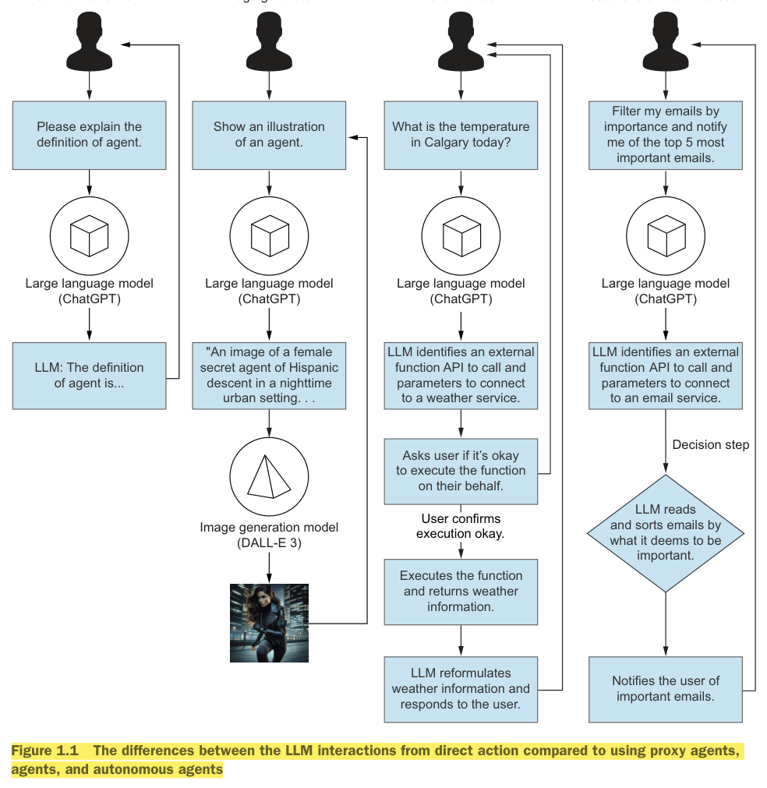
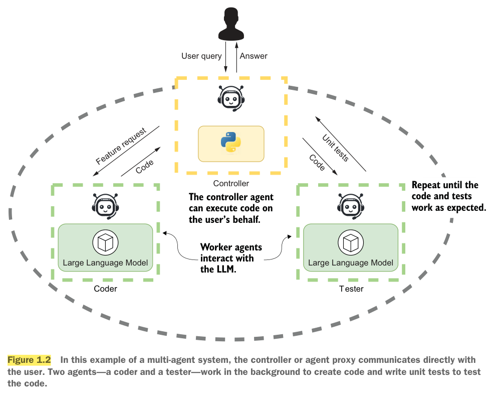
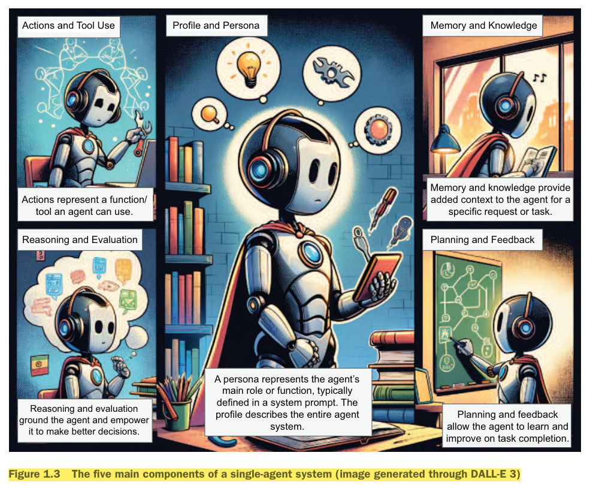
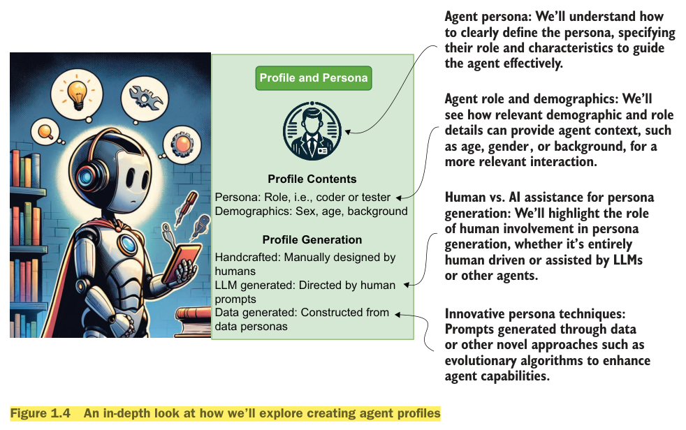
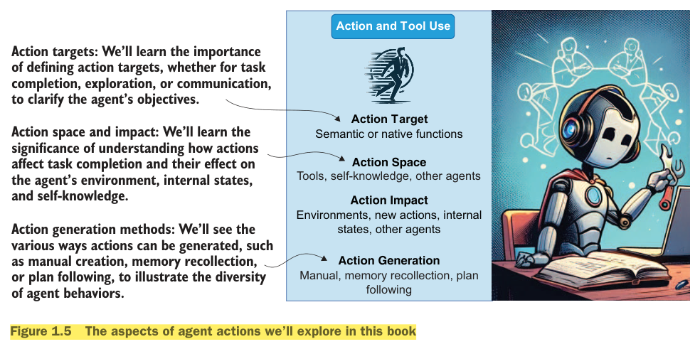
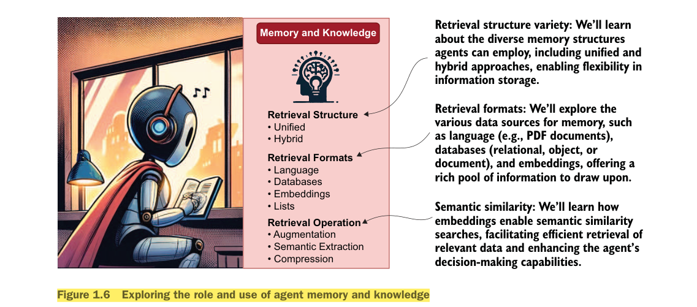
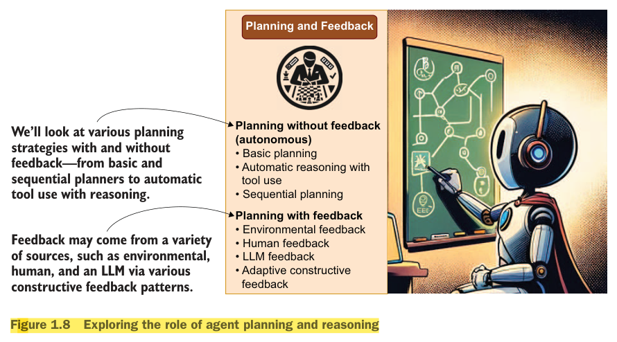
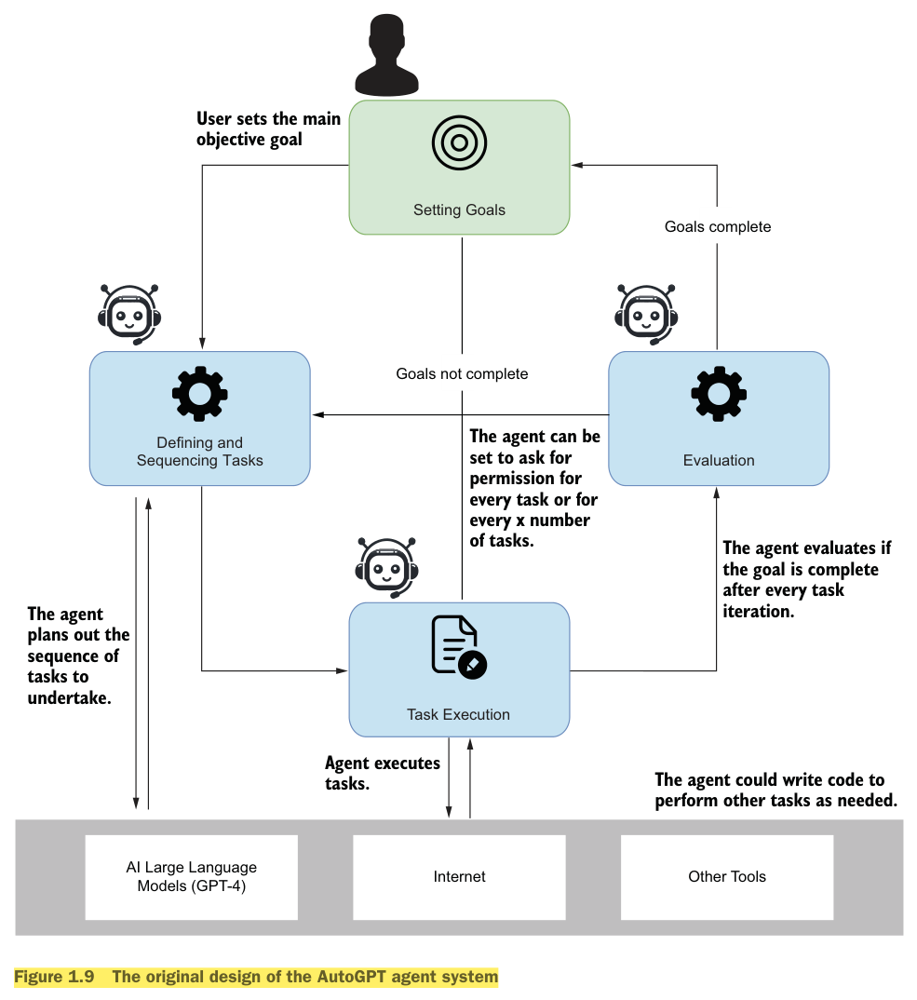
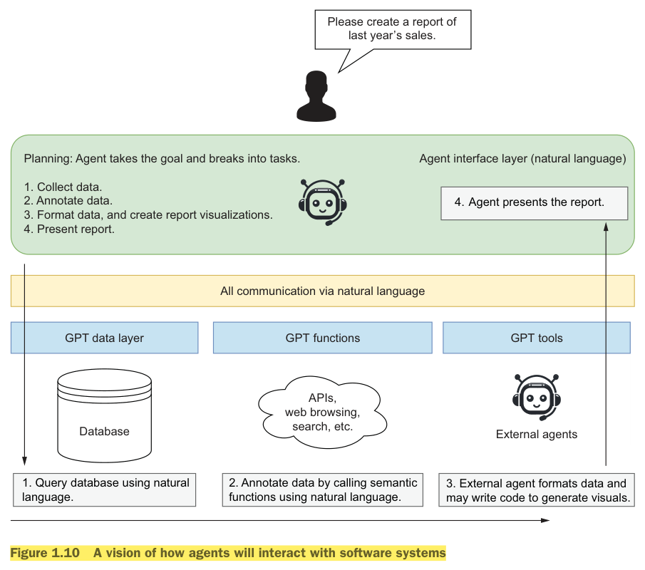

Defining agents • Components of an agent • Why agents? • AI interfaces • Self-governance, agency & autonomy
Contents
Defining agents & the four LLM interaction types
Multi-agent systems (intro)
The five component systems of an agent
The rise of the agent era — why agents? (AutoGPT, AGI)
Peeling back the AI interface
Navigating the agent landscape
Principles of agentic systems: self-governance, agency, autonomy
Worked example — travel-booking assistant (algorithm + Python)
Applications of agentic systems (robotics, AI, systems engineering)
Intelligent agents & their characteristics
Unit summary & quick revision
1. Defining Agents
The agent is not a new idea in ML/AI. In reinforcement learning an agent is an active decision-making and learning intelligence; in other areas the word means an automated application or software that does something on your behalf.
Dictionary definition used in this course (Merriam-Webster)
An agent is: (1) one that acts or exerts power; (2) something that produces or can produce an effect; (3) a means or instrument by which a guiding intelligence achieves a result.
The term assistant is treated as synonymous with agent; tools like OpenAI GPT Assistants fall under the "AI agent" umbrella.
OpenAI avoids the word agent because, in ML history, an agent is self-deciding and autonomous.
In AI an agent = an entity that automates interaction with a Large Language Model (LLM).
1.1 Four ways a user interacts with an LLM (Figure 1.1)

Figure 1.1 — Direct LLM use vs. proxy agent, agent/assistant, and autonomous agent
Type
What happens
Example
Direct user interaction
User talks straight to the LLM. No proxy/assistant interjects.
Early ChatGPT: "Please explain the definition of agent."
Agent / assistant proxy
An LLM intercepts the request and reformulates it into a format better suited to the task/model. Helps users with unfamiliar tasks or models.
DALL-E 3 via ChatGPT — ChatGPT writes a better image prompt for the image-generation model.
Agent / assistant
LLM is aware of plugin/assistant functions and prepares calls to them. Asks for user approval before executing; result returns to the LLM, which wraps it in natural language.
ChatGPT plugin / GPT assistant: "What is the temperature in Calgary today?" → weather API call → user confirms → reply.
Autonomous agent
Interprets the request, constructs a plan, identifies decision points, executes steps and makes decisions independently. May ask feedback at milestones but has free rein to explore & learn. Raises the most ethical and safety concerns.
"Filter my emails by importance and notify me of the top 5" — the agent reads, sorts, decides, notifies.
2. Multi-Agent Systems (introduction)
For complex problems, agents are broken into profiles / personas. Each profile has a specific task and executes it with specialised tools and knowledge. Multi-agent systems are agent profiles that work together in various configurations to solve a problem.

Figure 1.2 — Multi-agent system: a controller/proxy talks to the user; Coder and Tester agents work in the background
Controller / proxy agent — communicates directly with the user, can execute code on the user's behalf.
Coder profile writes the code requested; Tester profile writes unit tests. They communicate and loop until code and tests work as expected, then pass the result to the user.
Multi-agent systems may work autonomously or be guided entirely by human feedback. (Platform covered later: Microsoft AutoGen.)
Benefits: like a single agent but "magnified" — a single agent specialises in one task, multi-agent systems tackle multiple tasks in parallel; agents also give feedback and evaluation to each other, reducing errors.
3. Component Systems of an Agent
Agents are complex units built from component systems — the tools used to complete goals or even create new ones. Components are split into five categories; at the core of every agent is the profile & persona, with the other systems extending from it.

Figure 1.3 — The five main components of a single-agent system
#
Component
Role
1
Profile & Persona
Persona = agent's main role/function, usually defined in the system prompt. Profile describes the entire agent system.
2
Actions & Tool Use
A function/tool the agent can use.
3
Memory & Knowledge
Provides added context for a specific request/task.
4
Reasoning & Evaluation
Grounds the agent and lets it make better decisions.
5
Planning & Feedback
Lets the agent learn and improve on task completion.
3.1 Agent Profile and Persona

Figure 1.4 — Creating agent profiles
The persona (system prompt) guides the agent to complete tasks, learn how to respond, and handle nuances. It includes the background (e.g., coder, writer) and demographics.
Profile contents: persona (role, e.g., coder/tester) and demographics (sex, age, background).
Profile generation methods: Handcrafted (manually designed by humans), LLM-generated (directed by human prompts), Data-generated (constructed from data personas) — including novel techniques like evolutionary algorithms.
Effective personas are built with techniques such as rubrics and grounding; human-formulated vs AI-formulated profiles are compared.
NoteThink of a profile as describing the work the agent will perform and the tools it needs; the persona is one element of it.
3.2 Actions and Tool Use

Figure 1.5 — Aspects of agent actions
Actions are activities directed toward task completion or acquiring information.
Action target — what the action aims at: task completion, exploration, communication. Targets can be semantic or native functions, tools, self-knowledge, other agents.
Action space & impact (effect) — how actions affect task outcomes, the environment, new actions, internal states, other agents and self-knowledge.
Action generation — manual creation, memory recollection, or plan following.
3.3 Knowledge and Memory

Figure 1.6 — Role and use of agent memory and knowledge
Agents use knowledge/memory to annotate context with the most pertinent information while limiting the number of tokens.
Retrieval structure: Unified (single structure) or Hybrid (mix of retrieval forms).
Retrieval formats: Language (e.g., PDF documents), Databases (relational, object, document), Embeddings (vector representations enabling semantic similarity search), Lists (simple lists as memories).
LLMs/agents can effectively reason; this component annotates the workflow with the ability to think through problems and evaluate solutions.
Reasoning (self-reflect, reason out task completion)
Evaluation (basis for self-reflection on and after task completion)
Zero-shot prompting One-shot prompting Few-shot prompting Chain of thought Tree of thought Skeleton of thought
Self-consistency Prompt chaining
3.5 Planning and Feedback

Figure 1.8 — Agent planning and feedback
Planning organises tasks to achieve higher-level goals. Two approaches:
Planning without feedback (autonomous) — agent decides independently: basic planning, automatic reasoning with tool use, sequential planning.
Planning with feedback — plans monitored/modified from inputs such as environmental, human, LLM, adaptive constructive feedback.
Within planning: single-path reasoning (sequential, step-by-step) vs multipath reasoning (explore several strategies and save efficient ones for future use). External planners (code or other agent systems) may orchestrate plans.
Any agent type — proxy, agent/assistant, autonomous — may use some or all components; even regular agents benefit from planning.
4. Rise of the Agent Era — Why Agents?
Agents moved from a main research commodity to mainstream software development; many tools/platforms help build them.
After ChatGPT's release, prompt engineering emerged: techniques/patterns for better, more consistent output. But it only goes so far — effective prompting needs iteration, reflection and more iteration. This led to the first agent systems, e.g. AutoGPT.

Figure 1.9 — Original design of the AutoGPT agent system
AutoGPT loop
User sets the main objective (goal) → agent defines and sequences tasks → task execution (can use the Internet, other tools, GPT-4, even write code) → evaluation after every iteration → if goals not complete, replan using new knowledge/human feedback; if complete, finish. It can be set to ask permission for every task or every x tasks.
AutoGPT was the first to demonstrate the power of task planning + iteration with LLMs; "planning, iteration and repetition" are the generally accepted best process for complex, multifaceted goals.
Autonomous systems require trust in the decision-making, the guardrails/evaluation system, and the goal definition. Trust is acquired over time; lack of trust stems from lack of understanding of capabilities.
AGI (Artificial General Intelligence) — intelligence that can learn to accomplish any task a human can; many practitioners believe AGI via autonomous agents is attainable.
Therefore many production-ready agent tools are not autonomous but still deliver benefits by managing/automating tasks with GPTs. Agents/tools are only the top layer of a new software-development paradigm.
5. Peeling Back the AI Interface
The agent paradigm shifts how we develop software and handle data: instead of UIs, APIs and query languages like SQL, software and data will be interfaced through natural language.
AI interfaceA collection of functions, tools and data layers that expose data and applications through natural language. (The word "semantic" has been used for these before, but the book uses "AI interface".)

Figure 1.10 — How agents will interact with software systems (example: "Please create a report of last year's sales.")
Planning: agent takes the goal and breaks it into tasks — collect data, annotate data, format data & create report visualisations, present report.
GPT data layer (database) — queried using natural language.
GPT functions (APIs, web browsing, search) — annotate data by calling semantic functions in natural language.
GPT tools / external agents — format data and may write code to generate visuals.
All communication happens via natural language; the agent finally presents the report.
AI interfaces let agents consume services, tools and data → higher accuracy, more trustworthy and autonomous applications. It may not fit all software/data but will dominate many use cases.
6. Navigating the Agent Landscape
GPT agents represent a complete shift in how consumers and developers find information, build software and access data. Almost daily a new agent framework, component or interface appears on GitHub or in research papers — overwhelming for newcomers. Understanding the progression and interaction of these tools is key to developing single, multiple or autonomous agent systems.
7. Principles of Agentic Systems
Agentic systems drive innovation in robotics, AI and systems engineering; they challenge conventional ideas of accountability and responsibility. Three central ideas: self-governance, agency, autonomy.
Intelligent agents and decision-support systems using algorithms, ML and knowledge representation to analyse data, reason, recommend or decide — finance, healthcare, transportation, marketing.
Systems engineering
Complex, distributed, adaptive systems of interacting subsystems each with agentic behaviour — power grids, transportation networks, cyber-physical systems (resource allocation, fault tolerance).
7.2 Self-governance
DefinitionThe ability of a system to govern/control itself without external direction — make its own decisions, set its own goals and regulate behaviour using internal rules, models and decision algorithms. Behaviour changes when the environment or objectives change; interactions with environment/other systems are meaningful to it and influence it.
Self-organization — organise internal processes, resources, behaviour without external intervention.
Self-regulation — monitor and adjust own actions/outputs from feedback to stay within parameters/constraints.
Self-adaptation — modify behaviour, strategies or decision-making in response to environment/internal changes.
Self-optimization — continuously improve performance/efficiency via learning, experience or evolutionary processes.
Self-determination — set own objectives, priorities and courses of action, not entirely controlled by external forces.
Enabled by ML, knowledge representation, reasoning and decision-making algorithms.
7.3 Agency
DefinitionThe capability of an individual or entity to act independently and make choices.
Decisional authority — power to act per a chosen alternative; evaluates options and selects the best using internal decision-making rather than just external forces/predetermined rules.
Intentionality — presence of intentions/goals guiding behaviour; not merely reactive, has a sense of purpose and adjusts strategies.
Responsibility — answerability/accountability for outcomes and consequences of actions.
Travel-booking assistantAnalyses flight availability, ticket price and user restrictions (seat class) and decides how to look for flights/hotels to minimise overall cost; it is responsible for the outcome of those decisions.
7.4 Autonomy
Closely related to agency but focuses on the degree of independence. In AI/robotics it is the extent to which a system performs tasks and decisions without continuous human intervention.
Operational autonomy — perform tasks without direct human intervention, using internal processes, decision algorithms and environmental sensing.
Functional autonomy — make choices/take action to achieve targets, modulated by environment/context; adapt behaviour to changing conditions.
Hierarchical autonomy — amount of decisional authority granted within a larger framework; higher = more latitude over subsystems, lower = more constraints/oversight.
Travel assistantOperational: books flights/hotels, manages reminders with little human input. Functional: interprets commands, adapts to preferences. Hierarchical: depends on privacy preferences and access to sensitive data.
ImportantAutonomy does not imply absence of human oversight — systems operate inside boundaries set by designers (e.g., the chatbot asks for dates, locations, name, address, and prompts for clarification). Ethical considerations: as autonomy grows, alignment with human values and the risks of independent decisions become crucial.
8. Worked Example — Travel Booking Agent with Agency & Autonomy
Algorithm 1 (not yet using AI; just illustrates the concepts):
Require: Agent name N
Ensure: Initialized TravelAgent A with agency and autonomy
1: A <- CreateTravelAgent(N)
2: A.goals <- empty list
3: A.knowledge_base <- empty dictionary
// Agency: act on behalf of a user
4: function SetGoal(G): A.goals.Append(G) // defining objectives
6: function UpdateKnowledge(K,V): A.knowledge_base[K] <- V // acquire info from an API, and score
// Autonomy: operate independently
8: function MakeDecision(Options): best = max(Options, key=score); return best
11: function BookTravel(Departure, Destination):
12: Output "Agent A.name is booking travel to Destination"
13: SetGoal("Book flight from Departure to Destination")
14: UpdateKnowledge({Departure, Destination})
15: MakeDecision() // find the best flight independently
16: Output A
Name the agent (TripPlanner); create a TravelAgent object — an entity capable of agency and autonomy.
A.goals list → agency (intentions/desired outcomes on behalf of the user).
A.knowledge_base dictionary → supports both agency (acting for users) and autonomy (information for independent decisions).
SetGoal adds a goal (e.g., from chat: "Book me a flight from San Diego to Seattle").
UpdateKnowledge acquires information (flight options via travel APIs) and scores options (late flights low score, early flights high).
MakeDecision selects the highest-scoring option → autonomy (no direct human intervention).
BookTravel ties them together: set goal → update knowledge → decide → book.
Sample output:Agent TripPlanner is booking travel from SAN to SEA → Goal set → Knowledge updated with 3 flight options → Decision made: Selected flight JetBlue → Booking confirmed: BOOK-JetBlue-TRIPPLANNER. Final state: Name TripPlanner, Goals ['Book flight from SAN to SEA'].
LimitationThe agent has agency and autonomy but is not intelligent: it needs airport codes and cannot understand plain-language input like "Book me a flight from San Diego to Seattle". This is where generative AI (LLMs) steps in.
9. Intelligent Agents and Their Characteristics
Intelligent agentA complex, self-governed entity that perceives its environment and takes action to achieve goals. Ranges from basic rule-following systems to advanced systems that learn and adapt from experience.
Reactivity — responds to environmental changes/events in real time; continuously monitors surroundings and adjusts behaviour.
Proactiveness — not merely reactive; anticipates future needs, challenges, opportunities and takes initiative; goal-oriented.
Social ability — interacts/cooperates with agents or humans in multi-agent systems: communication, coordination, negotiation, leveraging collective intelligence.
Additional advanced capabilities:Learning & adaptation (ML, reinforcement learning, evolutionary algorithms) and Reasoning & planning (knowledge representation, logical inference, planning algorithms to find optimal courses of action). (Autonomy & self-governance and architecture patterns continue in Unit 2.)
10. Unit Summary & Quick Revision
An agent acts/produces effect/is an instrument of a guiding intelligence; in AI it automates LLM interaction. Assistant = agent.
Four LLM interaction types: direct user interaction, agent/assistant proxy, agent/assistant, autonomous agent.
Multi-agent systems: profiles working together (often via a proxy); parallelism + mutual evaluation reduce errors.
Five components: profile/persona, actions & tool use, knowledge/memory, reasoning/evaluation, planning/feedback.
Likely exam questions
1) Define agent and differentiate the four LLM interaction types. 2) Explain the five components of an agent with a neat diagram. 3) Why did the agent era arise? Explain AutoGPT's design. 4) What is an AI interface? 5) Differentiate self-governance, agency and autonomy with the travel-booking example.
Sources: Unit-1 Part-1 (Intro to agents and their world) & Unit-1 Part-2 (Principles of Agentic Systems, Packt) — summarised for RVCE study use.